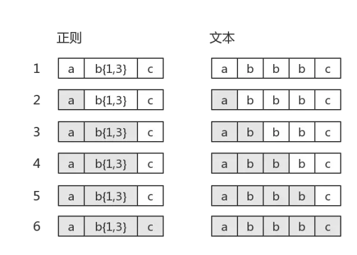
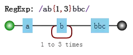
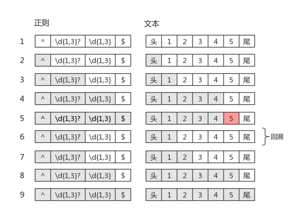
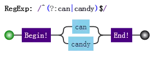

学习正则表达式，是需要懂点儿匹配原理的。
而研究匹配原理时，有两个字出现的频率比较高：“回溯”。
听起来挺高大上，确实还有很多人对此不明不白的。
因此，本章就简单扼要地说清楚回溯到底是什么东西。
内容包括：
假设我们的正则是/ab{1,3}c/，其可视化形式是：
当目标字符串是"abbbc"时，就没有所谓的“回溯”。其匹配过程是：

其中子表达式b{1,3}表示“b”字符连续出现1到3次。
如果目标字符串是"abbc"，中间就有回溯。
图中第5步有红颜色，表示匹配不成功。此时 b{1,3} 已经匹配到了2个字符“b”，准备尝试第三个时，结果发现接下来的字符是“c”。那么就认为 b{1,3} 就已经匹配完毕。然后状态又回到之前的状态（即第6步，与第4步一样），最后再用子表达式 c，去匹配字符“c”。当然，此时整个表达式匹配成功了。图中的第6步，就是“回溯”。
你可能对此没有感觉，这里我们再举一个例子。正则是：

目标字符串是"abbbc"，匹配过程是：
其中第7步和第10步是回溯。第7步与第4步一样，此时 b{1,3} 匹配了两个"b"，而第10步与第3步一样，此时 b{1,3} 只匹配了一个"b"，这也是b{1,3}的最终匹配结果。
这里再看一个清晰的回溯，正则是：
目标字符串是："acd"ef，匹配过程是：
图中省略了尝试匹配双引号失败的过程。可以看出 .* 是非常影响效率的。
为了减少一些不必要的回溯，可以把正则修改为 /"[^"]*"/。
正则表达式匹配字符串的这种方式，有个学名，叫回溯法。回溯法也称试探法，它的基本思想是：从问题的某一种状态（初始状态）出发，搜索从这种状态出发所能达到的所有“状态”，当一条路走到“尽头”的时候（不能再前进），再后退一步或若干步，从另一种可能“状态”出发，继续搜索，直到所有的“路径”（状态）都试探过。这种不断“前进”、不断“回溯”寻找解的方法，就称作“回溯法”。（copy于百度百科）。本质上就是深度优先搜索算法。其中退到之前的某一步这一过程，我们称为“回溯”。从上面的描述过程中，可以看出，路走不通时，就会发生“回溯”。即，尝试匹配失败时，接下来的一步通常就是回溯。道理，我们是懂了。那么JS中正则表达式会产生回溯的地方都有哪些呢？
之前的例子都是贪婪量词相关的。比如 b{1,3}，因为其是贪婪的，尝试可能的顺序是从多往少的方向去尝试。首先会尝试"bbb"，然后再看整个正则是否能匹配。不能匹配时，吐出一个"b"，即在"bb"的基础上，再继续尝试。如果还不行，再吐出一个，再试。如果还不行呢？只能说明匹配失败了。
虽然局部匹配是贪婪的，但也要满足整体能正确匹配。此时我们不禁会问，如果当多个贪婪量词挨着存在，并相互有冲突时，此时会是怎样？答案是，先下手为强！因为深度优先搜索。测试如下：
var string = "12345";
var regex = /(\d{1,3})(\d{1,3})/;
console.log( string.match(regex) );
// => ["12345", "123", "45", index: 0, input: "12345"]
惰性量词就是在贪婪量词后面加个问号。表示尽可能少的匹配，比如：
var string = "12345";
var regex = /(\d{1,3}?)(\d{1,3})/;
console.log( string.match(regex) );
// => ["1234", "1", "234", index: 0, input: "12345"]
其中 \d{1,3}? 只匹配到一个字符"1"，而后面的 \d{1,3} 匹配了"234"。
虽然惰性量词不贪，但也会有回溯的现象。比如正则是：
目标字符串是"12345"，匹配过程是：

知道你不贪、很知足，但是为了整体匹配成，没办法，也只能给你多塞点了。因此最后 \d{1,3}? 匹配的字符是"12"，是两个数字，而不是一个。
我们知道分支也是惰性的，比如 /can|candy/，去匹配字符串"candy"，得到的结果是"can"，因为分支会一个一个尝试，如果前面的满足了，后面就不会再试验了。分支结构，可能前面的子模式会形成了局部匹配，如果接下来表达式整体不匹配时，仍会继续尝试剩下的分支。这种尝试也可以看成一种回溯。
比如正则：

目标字符串是"candy"，匹配过程：
上面第5步，虽然没有回到之前的状态，但仍然回到了分支结构，尝试下一种可能。所以，可以认为它是一种回溯的。
其实回溯法，很容易掌握的。简单总结就是，正因为有多种可能，所以要一个一个试。直到，要么到某一步时，整体匹配成功了；要么最后都试完后，发现整体匹配不成功。既然有回溯的过程，那么匹配效率肯定低一些。相对谁呢？相对那些DFA引擎。而JS的正则引擎是NFA，NFA是“非确定型有限自动机”的简写。大部分语言中的正则都是NFA，为啥它这么流行呢？答：你别看我匹配慢，但是我编译快啊，而且我还有趣哦。
本文来自 JS正则表达式完整教程（略长）[https://juejin.im/post/5965943ff265da6c30653879]